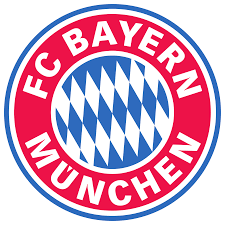

| الـبــيـــانــات الــشــخــصــيــة | ||
| الاسم الكامل | مانويل بيتر نوير | |
| تاريخ الميلاد | 27 مارس 1986 | |
| محل الميلاد | غيلسنكيرشن، ألمانيا الغربية | |
| العمر | 34 سنة | |
| الطول | 1.93 م | |
| الجنسية | المانيا | |
| محل الاقامة | ميونخ، ألمانيا | |
| مركز اللعب | حارس مرمى | |
مانويل بيتر نوير (بالألمانية: Manuel Neuer)، (مواليد 27 مارس 1986)، لاعب كرة قدم ألماني يلعب في مركز حارس مرمى، كان حارس شالكه خلفا للحارس الألماني السابق ينس ليمان. وهو الآن كابتن نادي بايرن ميونخ ومنتخب ألمانيا اختاره المدرب يواخيم لوف ليكون الحارس الأساسي لمنتخب ألمانيا لكرة القدم في كأس العالم 2010 في جنوب أفريقيا. وقد انتقل إلى نادي بايرن ميونخ . بصفقة قدرت بـ20 مليون يورو. وهو شقيق الحكم الألماني مارسيل نوير. وفي عام 2013 حقق مع نادي بايرن ميونخ الثلاثية. وفي عام 2014 توّج بكأس العالم مع منتخب ألمانيا وحصل على جائزة أفضل حارس في البطولة. وفي نفس العام ترشح نوير لجائزة أفضل لاعب في أوروبا وحصل على المركز الثاني قبل زميلة آريين روبن وخلف البرتغالي كريستيانو رونالدو. وفي سباق كرة الفيفا الذهبية 2014 حصل نوير على المركز الثالث خلف كل من البرتغالي كريستيانو رونالدو والأرجنتيني ليونيل ميسي. وفي العام نفسه حصل على جائزة أفضل ثالث لاعب في العالم من قبل صحيفة الغارديان. وهو الحاصل على جائزة أفضل حارس في العالم من قبل الفيفا لمدة أربع سنوات متتالية (منذ 2013 - 2016) ويعد مانويل نوير من أفضل الحراس المتكاملين عبر تاريخ كرة القدم..